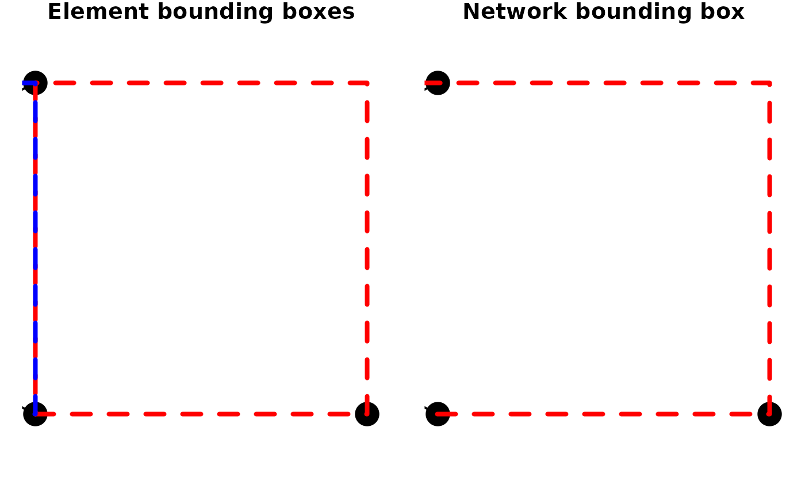

A spatial network specific bounding box extractor, returning the combined bounding box of the nodes and edges in the network.
st_network_bbox(x, ...)
Arguments
| x | An object of class |
|---|---|
| ... | Arguments passed on to |
Value
An object of class bbox.
Details
See st_bbox for details.
Examples
library(sf) # Create a network. node1 = st_point(c(8, 51)) node2 = st_point(c(7, 51.5)) node3 = st_point(c(8, 52)) node4 = st_point(c(9, 51)) edge1 = st_sfc(st_linestring(c(node1, node2, node3))) nodes = st_as_sf(c(st_sfc(node1), st_sfc(node3), st_sfc(node4))) edges = st_as_sf(edge1) edges$from = 1 edges$to = 2 net = sfnetwork(nodes, edges)#>#># Create bounding boxes for nodes, edges and the whole network. node_bbox = st_bbox(activate(net, "nodes")) edge_bbox = st_bbox(activate(net, "edges")) net_bbox = st_network_bbox(net) # Plot. plot(net)